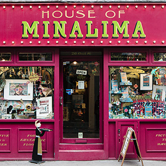

How do Graphic Designers create a visual experience in film?
By Emma McGurren
Introduction
The role of a Graphic Designer in filmmaking is to create the visual experience that the viewer witnesses when watching a film. Every TV series and movies has at least one graphic designer behind the scenes. Not all of their work may be apparent and some may not even appear on screen. However, without the graphic designer, the movie would have no props, posters, patterns, lettering… and without all of these things, we would be left with a pitiful absence of visual aesthetics.
The graphic designer has the opportunity to create another world, with elements that may not be completely exposed to the viewer, but are still of importance. Successful graphic design allows a film to create a new experience that you are unfamiliar with, whilst remaining authentic enough to make you feel as though the setting is a reality.
This essay will explore the role of a graphic designer in film, in particular focusing on the Harry Potter series and the work of Irish based designer Annie Atkins.
Graphic Design in film
When we think about Graphic Design in the film industry, the main elements that we might consider first are stereotypically the movie posters and maybe the chosen typography. However, there is much more to the job than meets the fixated eye.
Fig.1. Movie Posters, 2019
Typically, the lead graphic designer chosen for a film begins by receiving a copy of the movie script. They outline all of the elements they and their team of designers are going to have to create. Every line may lead to something relevant for the scene to make sense, so they must be meticulous on their search for graphic opportunities. This must then be discussed with the director (Charles, 2019). Some scenes may be what they refer to as, “graphic heavy”, such as office scenes or a toyshop setting. Others such as prison cells, may not contain as much design. The planning will begin with the designer looking for inspiration from real references, deeply researching the history and background, to help realise the correct aesthetic. The aesthetic is not only vital for the audience, but also the actors and directors. A realistic scene, with realistic props and appropriate design, will always allow the character to feel more comfortable and creative in their role, helping to create a better visual experience (Atkins, 2015).
Harry Potter
There are many marvellous examples of exceptional graphic design in the film industry. However one that always seems to stand out is the Harry Potter series. The creative duo behind the design of J.K Rowling’s wizardry world are London based designers, Miraphora Mina and Eduardo Lima. The pair collaborate to operate from their studio MinaLima Design. MinaLima Studio, are responsible for the newspapers, tabloids, book covers, letters etc. from seven of the films. The tailor-made graphics include the use of vintage fonts, taken from old books and the Ministry of Magic official decrees riff off the lines and simple geometries of Constructivist poster design. An advert for the Quidditch World Cup incorporates retro graphics seemingly inspired by midcentury Olympics posters. (MinaLima, n.d.)
Fig.2. Quidditch Cup Poster, Minalima.
Fig.3. Minaphora Mina and Eduardo Lima.
Fig.4. House of Minalima, London.
The designers gave Hogwarts a Gothic atmosphere, to match the school’s gaudy architecture. Even though Harry Potter was set in modern day, an olden day aesthetic fitted perfectly. This is depicted through many elements, in particular the four-story Weasley joke shop in Half-Blood Prince (2009), where their team spent nearly six months designing hundreds of bits of packaging to bulk out the shop. They were inspired by old, funny, Chinese food packaging which they altered to make the store feel like ‘the authentic brainchild of two eager and entrepreneurial teenage wizards’, (Mina, 2015) Of course, the props, signs, newspapers, etc. are not at the forefront of the movies, but all of the subtle combinations of Art and Graphic Design in the movie creates a beautiful yet believable fantasy atmosphere, creating a visual experience that stole hearts across the world.
Fig.5. A collection of Minalima's work from the Harry Potter series.
Fig.6. Weasley's joke shop packaging, Minalima.
Annie Atkins
While a successful visual experience during a film requires a huge dedicated crew and cast, it is important to note the importance of the graphic designer when assembling of a movie. An example of this is the work of designer Annie Atkins. Atkins is known for being the lead graphic designer on movie sets such as ‘The Grand Budapest Hotel’, an iconic example of wonderful graphics. Atkins has also designed for many more, including ‘Isle of Dogs’ and ‘The Boxtrolls’.
While a successful visual experience during a film requires a huge dedicated crew and cast, it is important to note the importance of the graphic designer when assembling of a movie. An example of this is the work of designer Annie Atkins. Atkins is known for being the lead graphic designer on movie sets such as ‘The Grand Budapest Hotel’, an iconic example of wonderful graphics. Atkins has also designed for many more, including ‘Isle of Dogs’ and ‘The Boxtrolls’.
“I remember feeling like I really wanted to be able to create something like that too – I wanted to be a designer, but I also wanted to be an artist because I wanted to make peculiar things.”
-Atkins, 2020
Atkins saw a clear pathway for her future and so she began studying Visual Communications in London before moving to Iceland for four years. Atkins then completed an MA in Film at UCD, enabling her to become a Graphic designer on film sets. Atkins first job in the film industry was on set of the series The Tudors, where she went on to receive recognition for her eye for detail by getting jobs on sets such as BoxTrolls, Penny Dreadful and Oscar award winning, Grand Budapest Hotel (Fulleylove, 2020)
Quite often, graphic designers like Atkins work on period pieces, meaning they are set in the past. A lot of research is needed to replicate the exact style and presentation of things like building signage and newspapers. Annie Atkins collects inspiration, such as old stamps, stickers and postcards from different eras.
Fig.7. Annie Atkin's stamp collection.
Atkins works both digitally and by hand. Whilst working on ‘The Tudors’, she stated how she could not understand why a graphic designer would be required to design on a series set when graphic design didn’t even exist. She then realised as the graphic designer she would have to interpret the role of the people who would have designed everything during that period of time, hence she became a calligrapher, making things such as proclamations, a glazier creating stained glass windows along with a sculptor, for tombstones (Atkins, 2015). With the array of trades one learns, being a graphic designer on a film set is like being an actor in her own job.
Annie Atkins lives by the “Golden Rule”, when designing for films…
"If it was made by hand at the time, make it by hand now. If it was made by a machine at the time, make it by machine now."
-Atkins, 2015
Fig.8. Annie Atkin's tokens.
This keeps an authentic, realistic feel. Atkins also recommends starting all of your designs from scratch. With your own pencil and piece of paper you have the ability to capture the essence of the movie, through every aspect.
Often, being a graphic designer on a film set is a stressful role, always the last priority, expected to be ready for anything. A film is shot by location order, rather than story order, therefore props must be ready at hand, with at least 6 copies of each, for different takes. Each prop must also be identical, known as “Continuity”. (Atkins, 2017)
Fig.9. Annie Atkin's Telegram.
This telegram seen above had to be recreated 30 times, with every single detail having to be identical, including the splashes of blood and creases in the paper. This requires not only the patience of a saint, but the hands of a perfectionist to accompany.
Deep focus, time, energy and research is committed into every prop. Language is also a very important part of the graphics, therefore it is important to be extremely cautious with regards to spelling and punctuation.
Fig.10. Annie Atkin's Telegram.
Fig.11. Annie Atkin's Maps.
Whilst working on the grand Budapest Hotel, Annie Atkins made a spelling mistake… she spelt Patisserie incorrectly on the Mendl’s boxes. Before the mistake was spotted, quite a few boxes had already been shot…
Fig.12. Scene from The Grand Budapest Hotel.
Fig.13. Mendl's boxes.
Thousands of boxes had already been made and had to be edited. Mistakes can happen, but they also show the commitment of the designers to make the movie a success. The role takes a highly skilled individual, one with traits such as communication skills, a curiosity to learn, patience, passion and of course not forgetting… good grammar! (Wood, 2015)
Conclusion
Becoming a graphic designer on film sets is a job which takes a huge amount of skill, patience, creativity and also confidence. They are the forgotten designers, yet without them movies like The Grand Budapest Hotel or Harry Potter, would not be as successful as they are today. Not only would they become less pleasurable to watch, but life would be more difficult for the actors and directors. The graphic designer fills the spots in the film set that no one else thought to fill.
Bibliography
- AIGAdesign. (2017) The secret world of graphic design for filmmaking - Annie Atkins. Available at: youtube.com [Accessed 16 November 2020]
- Fulleylove, R. (2020) Creative Heroes: Annie Atkins. Creative Review. (Online) Available at: https://www.creativereview.co.uk/creative-heroes-annie-atkins/ https://www.creativereview.co.uk/creative-heroes-annie-atkins/ [Accessed on 1 December 2020]
- Gal, H. (2015) The Harry Potter factory: inside JK Rowling's favourite room on Earth. The Guardian (Online) Available at: theguardian.com [Accessed 21 November 2020]
- LaSane, A. (2019) Graphic Design in Film: The Substance of Visual Storytelling. Available from: https://blog.frame.io [Accessed 15 November 2020].
- Lima, E, Mina. M (n.d.) MinaLima (online) Available at: minalima.com [Accessed 17 November 2020]
- It’s Nice That. (2015) Here London 2015: Annie Atkins. Available at: youtube.com [Accessed 15 November 2020]
- Wood, A. (2015) 10 essential traits of a successful graphic designer. Creative Boom. (Online) Available at: creativeboom.com [Accessed 27 November 2020]
Images
- Fig.1. Movie Posters, 2019. Image. Comingsoon.net
- Fig.2. Quidditch Cup Poster, Minalima. Image.
- Fig.3. Minaphora Mina and Eduardo Lima. Image.Minalima.com
- Fig.4. House of Minalima, London. Image. Minalima.com
- Fig.5. A collection of Minalima's work from the Harry Potter series. Image.Minalima.com
- Fig.6. Weasley's joke shop packaging, Minalima.Minalima.com
- Fig.7. Annie Atkin's stamp. Image. www.theguardian.com
- Fig.8. Annie Atkin's tokens. Image.Annieatkins.com
- Fig.9. Annie Atkin's Telegram. Image.www.theguardian.com
- Fig.10. Annie Atkin's Newspaper. Image.www.theguardian.com
- Fig.11. Annie Atkin's Maps. Image.www.theguardian.com
- Fig.12. Scene from The Grand Budapest Hotel. Image.Annieatkins.com
- Fig.13. Mendl's boxes. Image.Annieatkins.com
Top